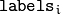
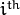
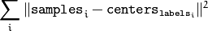
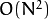

Clustering¶
kmeans¶
Finds centers of clusters and groups input samples around the clusters.
- C++: double kmeans(InputArray data, int K, InputOutputArray bestLabels, TermCriteria criteria, int attempts, int flags, OutputArray centers=noArray() )¶
- Python: cv2.kmeans(data, K, criteria, attempts, flags[, bestLabels[, centers]]) → retval, bestLabels, centers¶
- C: int cvKMeans2(const CvArr* samples, int cluster_count, CvArr* labels, CvTermCriteria termcrit, int attempts=1, CvRNG* rng=0, int flags=0, CvArr* _centers=0, double* compactness=0 )¶
- Python: cv.KMeans2(samples, nclusters, labels, termcrit, attempts=1, flags=0, centers=None) → float¶
Parameters: - samples – Floating-point matrix of input samples, one row per sample.
- data – Data for clustering.
- cluster_count – Number of clusters to split the set by.
- K – Number of clusters to split the set by.
- labels – Input/output integer array that stores the cluster indices for every sample.
- criteria – The algorithm termination criteria, that is, the maximum number of iterations and/or the desired accuracy. The accuracy is specified as criteria.epsilon. As soon as each of the cluster centers moves by less than criteria.epsilon on some iteration, the algorithm stops.
- termcrit – The algorithm termination criteria, that is, the maximum number of iterations and/or the desired accuracy.
- attempts – Flag to specify the number of times the algorithm is executed using different initial labellings. The algorithm returns the labels that yield the best compactness (see the last function parameter).
- rng – CvRNG state initialized by RNG().
- flags –
Flag that can take the following values:
- KMEANS_RANDOM_CENTERS Select random initial centers in each attempt.
- KMEANS_PP_CENTERS Use kmeans++ center initialization by Arthur and Vassilvitskii [Arthur2007].
- KMEANS_USE_INITIAL_LABELS During the first (and possibly the only) attempt, use the user-supplied labels instead of computing them from the initial centers. For the second and further attempts, use the random or semi-random centers. Use one of KMEANS_*_CENTERS flag to specify the exact method.
- centers – Output matrix of the cluster centers, one row per each cluster center.
- _centers – Output matrix of the cluster centers, one row per each cluster center.
- compactness – The returned value that is described below.
The function kmeans implements a k-means algorithm that finds the centers of cluster_count clusters and groups the input samples around the clusters. As an output,  contains a 0-based cluster index for the sample stored in the  row of the samples matrix.
The function returns the compactness measure that is computed as

after every attempt. The best (minimum) value is chosen and the corresponding labels and the compactness value are returned by the function. Basically, you can use only the core of the function, set the number of attempts to 1, initialize labels each time using a custom algorithm, pass them with the ( flags = KMEANS_USE_INITIAL_LABELS ) flag, and then choose the best (most-compact) clustering.
Note
- An example on K-means clustering can be found at opencv_source_code/samples/cpp/kmeans.cpp
- (Python) An example on K-means clustering can be found at opencv_source_code/samples/python2/kmeans.py
partition¶
Splits an element set into equivalency classes.
- C++: template<typename _Tp, class _EqPredicate> int partition(const vector<_Tp>& vec, vector<int>& labels, _EqPredicate predicate=_EqPredicate())¶
Parameters: - vec – Set of elements stored as a vector.
- labels – Output vector of labels. It contains as many elements as vec. Each label labels[i] is a 0-based cluster index of vec[i] .
- predicate – Equivalence predicate (pointer to a boolean function of two arguments or an instance of the class that has the method bool operator()(const _Tp& a, const _Tp& b) ). The predicate returns true when the elements are certainly in the same class, and returns false if they may or may not be in the same class.
The generic function partition implements an
 algorithm for
splitting a set of
 elements into one or more equivalency classes, as described in
http://en.wikipedia.org/wiki/Disjoint-set_data_structure
. The function
returns the number of equivalency classes.
elements into one or more equivalency classes, as described in
http://en.wikipedia.org/wiki/Disjoint-set_data_structure
. The function
returns the number of equivalency classes.
| [Arthur2007] | Arthur and S. Vassilvitskii. k-means++: the advantages of careful seeding, Proceedings of the eighteenth annual ACM-SIAM symposium on Discrete algorithms, 2007 |
Help and Feedback
You did not find what you were looking for?- Ask a question on the Q&A forum.
- If you think something is missing or wrong in the documentation, please file a bug report.